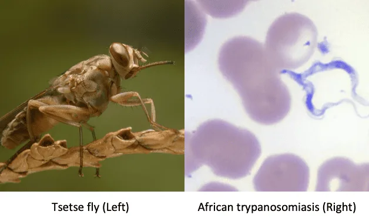

Expanded Nursing Uganda Explanation
Trypanosomiasis (sleeping sickness) should be studied as a medication-safety topic: indication, dose, route, timing, contraindications, expected effects, adverse effects, documentation and patient teaching all matter.
Contents, 15 sections (tap to expand)
01 African Trypanosomiasis (Sleeping Sickness)
Trypanosomiasis , commonly known as African trypanosomiasis or sleeping sickness , is a parasitic disease caused by protozoa of the genus Trypanosoma .
These parasites are transmitted by the tsetse fly and affect both humans and animals. The disease is endemic to sub-Saharan Africa and can be fatal if left untreated.
02 Aetiology :
Trypanosomiasis is caused by two main species of Trypanosoma :
- Trypanosoma brucei rhodesiense (TBr) : This species causes the acute form of the disease and is predominantly found in East and Southern Africa .
- Trypanosoma brucei gambiense (TBg): This species causes the chronic form of the disease and is prevalent in West and Central Africa .
03 Life Cycle:
Vector (Tsetse Fly):
- Infective stage : The tsetse fly ingests trypanosomes in the metacyclic trypomastigote stage from an infected host.
- Multiplication : Within the fly’s gut, trypanosomes transform into procyclic trypomastigotes and multiply.
- Migration : The trypanosomes migrate to the salivary glands of the fly and differentiate into metacyclic trypomastigotes, the infective stage for humans and animals.
Human:
- Infection : Metacyclic trypomastigotes are injected into the bloodstream during a fly bite.
- Multiplication : The trypanosomes multiply in the bloodstream as bloodstream trypomastigotes.
- Spread : They can cross the blood-brain barrier, reaching the CNS and transforming into meningoencephalitic trypomastigotes.
04 Forms of Transmission:
- Tsetse fly : This is the primary mode of transmission. The fly acquires trypanosomes by feeding on an infected animal or human. During its subsequent feedings, it injects the parasites into the bloodstream of its new host.
- Blood transfusion : While rare, the disease can be transmitted through contaminated blood transfusions.
- Mother to child : Transmission from mother to child can occur during pregnancy or childbirth.
05 Hosts :
- TBg : Pigs, dogs, antelopes, cows, sheep, goats, humans.
- TBr : Antelopes, pigs, and humans (humans are the most common source of infection).
06 Vectors :
- Glossina palpalis (Riverine type) : Breeds along rivers and lakes and transmits mainly T. b. gambiense .
- Glossina morsitans (Wounded type) : Stays in open, lightly wooded, packed land away from water and transmits T. b. rhodesiense .
07 Pathogenesis :
Trypanosomiasis arises when humans or animals are infected with trypanosomes through the bite of an infected tsetse fly. The parasite enters the bloodstream and multiplies, eventually reaching the central nervous system (CNS) in the later stages of the disease.
- Toxins : Trypanosomes produce toxins that damage tissues, causing inflammatory changes at the primary chancre, skeletal and heart muscles.
- CNS damage : Toxins may destroy ependymal cells lining the brain ventricles, interfering with serotonin release and causing sleep disturbances.
- Hypersensitivity reactions : The presence of trypanosomes may cause itching (pruritis) and hives (urticaria).
08 Clinical Presentation:
Onset : Both TBg and TBr follow a similar course, but TBr is often acute and virulent, leading to death within 2-3 years if untreated.
Stage 1: Primary/ Chancre Stage
- History of bite
- Local swelling/ nodule at the bite site, possibly hardened and reddened.
- The chancre may resemble a large boil, but with less pain.
- This stage can last 1-2 weeks and may resolve.
Stage 2: Blood Stage/ Systemic Stage /Haematolymphatic stage.
- Fever : Intermittent fever
- Lymphadenopathy : Swollen spleen and cervical lymph nodes (due to lymphatic spread).
- Physical weakness : Loss of strength accompanied by fever.
- Itchy rashes : Skin patches (15-30 cm in diameter) on the chest and back due to hypersensitivity to trypanosomes.
- Dyspnoea : Shortness of breath due to pericardial effusion and congestive heart failure in chronic cases (TBr).
- Hepatomegaly : Enlarged liver due to liver damage in chronic cases, with potential jaundice.
- Pitting oedema : Swelling on the face, lower limbs, eyelids, and abdomen due to cardiac failure or kidney damage.
- Neurological pains: Muscle cramps are common.
- Reduced appetite and weight loss : Due to constant sleeping and difficulty eating.
- Menstrual irregularities : Amenorrhoea in women.
- Anaemia : Due to the destruction of red blood cells by the trypanosomes.
Stage 3: CNS Stage/ Meningoencephalitis
This stage develops after several months or years of infection, but can occur more rapidly in the acute form (TBr). It’s characterized by involvement of the central nervous system.
Sleep disturbances :
- Daytime sleepiness, lethargy, and coma.
- Nighttime insomnia, restlessness, and nightmares.
Behavioral changes :
- Confusion, apathy, and disorientation.
- Personality changes , including aggression and irritability.
- Hallucinations and delusions.
Neurological signs :
- Motor incoordination : Tremors, jerky movements, paralysis (facial palsy, limb weakness, difficulty swallowing), ataxia (unsteady gait).
- Sensory disturbances: Numbness and tingling sensations.
- Headache : Often severe and persistent.
Meningitis :
- Stiff neck (meningismus)
- Photophobia (sensitivity to light)
- Fever
- Nausea and vomiting
Other Symptoms:
- Swelling : The face and limbs may become swollen, especially in the late stages.
- Cardiac complications : Irregular heartbeat, heart failure, and pericarditis can occur.
- Renal complications : Kidney failure can occur in later stages.
09 Diagnosis :
Clinical examination : Evaluating the patient’s history, symptoms, and neurological signs.
Laboratory investigations :
Microscopy :
- Wet blood smear: Examination of a fresh blood sample under a microscope for the presence of trypanosomes.
- Thick blood smear : A higher concentration of blood is used to improve detection of trypanosomes.
- Staining : Using Giemsa or Wright’s stain to visualize the trypanosomes.
Serology : Blood tests to detect antibodies against trypanosomes.
Lumbar puncture (LP) : A spinal tap to collect cerebrospinal fluid (CSF) for examination.
- Microscopy : Examining the CSF for trypanosomes, especially in the meningoencephalitic stage.
- Biochemical analysis : Measuring protein levels and cell counts in the CSF.
Molecular method s: PCR testing can be used to detect trypanosome DNA, especially in the early stages of infection.
10 Differential Diagnosis:
- Malaria : Can present with fever, chills, sweating, and headaches.
- Tuberculosis (TB): Can cause fever, weight loss, and night sweats.
- Meningitis : Can cause headache, fever, stiff neck, and altered mental status.
- HIV/AIDS : Can cause fever, weight loss, and neurological symptoms.
- Other infections : Meningococcal meningitis, encephalitis, and viral infections.
11 Management :
Early Stages:
- Suramin : Given intravenously (IV) every 3-5 days for 6-7 doses. Effective against bloodstream trypanosomes, but not CNS involvement.
- Pentamidine : Given intramuscularly (IM) daily for 7-10 days. Effective against bloodstream trypanosomes.
Late Stages (CNS Involvement):
- Melarsoprol (MEL.B) : The only drug effective against trypanosomes in the CNS. Given intravenously and requires careful monitoring due to potential side effects.
- Eflornithine : Alternative treatment for late-stage disease, especially in pregnant women.
Supportive Care:
- Bed rest : To reduce the risk of complications and improve recovery.
- Hydration : To prevent dehydration.
- Nutrition : Adequate nutrition is essential to support the body’s fight against infection.
- Symptom management : Medication for fever, headache, and other symptoms.
Prevention and Control:
- Vector control : Reducing the tsetse fly population through insecticides, traps, and clearing of vegetation in endemic areas.
- Early diagnosis and treatment : Active screening and case finding programs are crucial for timely treatment and preventing the spread of the disease.
- Sleeping sickness awareness : Public health education about the disease, its transmission, and prevention measures.
Prognosis :
- Untreated : The disease is almost always fatal.
- Treated : Early treatment is important for a positive prognosis. Late-stage treatment is more challenging and has a higher risk of complications.
Nursing Management:
- Assessment : Monitor vital signs, neurological status, and symptoms.
- Medications : Administer medications according to the doctor’s orders and monitor for side effects.
- Hydration : Ensure adequate fluid intake to prevent dehydration.
- Nutrition : Provide a balanced diet to support the body’s recovery.
- Comfort : Provide comfort measures for symptoms like fever, headache, and pain.
- Patient education : Educate the patient and their family about the disease, its management, and preventive measures.
- Early Stage Treatment: Trypanosoma rhodesiense sleeping sickness: For both children and adults: Suramin is the drug of choice for early-stage T. rhodesiense infection. Dosage : A test dose of 5 mg/kg body weight should first be administered intravenously (IV) to check for anaphylactic reactions. If no reaction occurs, five injections of 20 mg/kg body weight are given every 5 days, totaling 100 mg/kg over a 23-day period. The schedule is as follows: Day 0: 5 mg/kg body weight Day 3: 20 mg/kg body weight Day 8: 20 mg/kg body weight Day 13: 20 mg/kg body weight Day 18: 20 mg/kg body weight Day 23: 20 mg/kg body weight Important Note : If anaphylaxis occurs after the test dose, suramin should not be administered. Trypanosoma gambiense sleeping sickness: For both children and adults: Pentamidine is the preferred treatment for early-stage T. gambiense infection. Dosage: 4 mg/kg body weight daily for 7 days, administered intramuscularly (IM). Important Considerations: Food should be given 1 hour before pentamidine administration to prevent hypoglycemia. The patient should lie flat (supine position) during administration and for 1 hour afterward to prevent hypotension. Late Stage Treatment: Trypanosoma rhodesiense sleeping sickness: For both children and adults: Melarsoprol is the primary treatment for late-stage T. rhodesiense infection. Dosage: 2.2 mg/kg body weight daily for 10 days administered intravenously (IV). Trypanosoma gambiense sleeping sickness: Children ≤ 12 years and <35 kg: Eflornithine is the preferred treatment. Dosage: 150 mg/kg body weight every 6 hours for 14 days (total daily dose of 600 mg/kg). Administration: Dilute the 150 mg/kg dose of eflornithine in 100 ml of distilled water and administer the infusion over at least 2 hours. Children >12 years up to 15 years: Eflornithine is the preferred treatment. Dosage: 100 mg/kg body weight every 6 hours for 14 days (total daily dose of 400 mg/kg). Administration: Dilute the 100 mg/kg dose of eflornithine in 100 ml of distilled water and administer the infusion over at least 2 hours (rate of 20 drops/minute). Adults >15 years: NECT ( Nifurtimox / Eflornithine Combination Therapy ): This is the preferred treatment for late-stage T. gambiense infection in adults. Nifurtimox dosage: 5 mg/kg body weight every 8 hours orally for 10 days (total daily dose of 15 mg/kg). Eflornithine dosage: 200 mg/kg body weight every 12 hours for 7 days (total daily dose of 400 mg/kg). Administration: Dilute the 200 mg/kg dose of eflornithine in 250 ml of distilled water and administer the infusion over at least 2 hours (rate of 50 drops/minute). Relapses : If a relapse occurs, IV melarsoprol at 2.2 mg/kg once daily for 10 days is used. Important Notes: Corticosteroids : Corticosteroids should be given to patients with late-stage trypanosomiasis who are receiving melarsoprol, as they may have hypoadrenalism. Corticosteroids can also reduce drug reactions. Hydrocortisone should not be given after day 24, even if the melarsoprol treatment is not yet complete. If prednisolone is used instead of hydrocortisone, the anti-inflammatory action is similar, but the correction of hypoadrenalism will be much less effective. Suramin : Suramin should not be used for early or late-stage T. gambiense treatment in areas where onchocerciasis (river blindness) is endemic, as it can cause blindness in individuals infected with onchocerciasis by killing the filariae in the eye.
12 Nursing Uganda Clinical Lens
Use Trypanosomiasis (sleeping sickness) as a practical nursing topic, not only a memorized definition. Study medicines through indication, safety checks, expected response, adverse effects and patient teaching.
- What to understand first: define trypanosomiasis (sleeping sickness), identify the normal or expected pattern, then explain what changes when the patient is unwell.
- Why it matters in care: the nurse must recognize risk early, explain findings clearly, document accurately and know when to escalate.
- How to revise it: connect each point to assessment, nursing diagnosis or care problem, intervention, rationale and evaluation.
13 Assessment Guide
- Diagnosis or reason for the medicine, allergies, pregnancy status and previous reactions.
- Current medicines, herbal products, renal or liver risk and baseline observations.
- Dose, route, timing, dilution, expiry date and documentation requirements.
14 Nursing Priorities, Rationales and Outcomes
- Apply the rights of medication administration and facility policy.
- Monitor therapeutic response and class-specific adverse effects.
- Educate the patient on purpose, timing, missed doses, warning symptoms and adherence.
The rationale for these priorities is patient safety: nursing actions should prevent deterioration, reduce discomfort, support recovery and create clear evidence for the next caregiver.
- Expected outcome: The medicine produces the intended effect without preventable harm, and administration is accurately documented.
15 Patient Teaching and Revision Check
- Explain trypanosomiasis (sleeping sickness) in simple language the patient or caregiver can repeat back.
- Teach warning signs, medicine or follow-up instructions, hygiene or lifestyle points where relevant.
- For exams, prepare a short answer using: definition, causes or risk factors, signs, assessment, management, complications and prevention.
- For ward practice, document baseline findings, actions taken, patient response and the plan for review.
Illustrations and Diagrams (1)

Related Video Lectures
Watch nursing lecture videos on YouTube for this topic. Opens in a new tab.
Watch on YouTubeExternal link: YouTube may use its own cookies and terms. Nursing Uganda is not affiliated with YouTube.